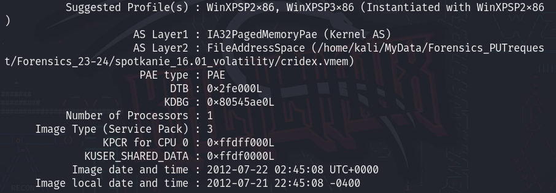

Memory forensics
Na badanym komputerze możemy znale藕 wiele lad贸w pozostawionych przez osob go użytkujc, ale najpewniej najbardziej interesujce nas informacje można znale藕 wewntrz zrzut贸w pamici (eng: memory dump) - czyli utworzonym obrazie pamici RAM. Zrzuty te bardzo czsto s bardzo obszerne i zawieraj dużo informacji, kt贸rych nie można atwo wycign, np. poprzez komend strings.
W tym przypadku bardzo pomocne jest narzdzie Volatility.
Oryginalne pliki 藕r贸dowe znajduj si w repozytoriach prowadzonych przez Volatility Foundation:
R贸偶nice midzy wersjami
Czytajc o Volatility możemy zada sobie pytanie, dlaczego istniej dwie wersje programu?
Podzia pochodzi wprost z wersji Pythona, kt贸ry odpowiada za uruchamianie skrypt贸w:
Volatility(nazywane r贸wnieżVolatility2) korzysta z Pythona w wersji 2.Volatility3korzysta z Pythona w wersji 3.
Kt贸r wersj wybra?
Najnowsza stabilna i najbardziej bogata w funkcje wersja to Volatility 2.6 (stan na 10.03.2024). Nie jest niestety już ona dalej rozwijana, pomijajc pomniejsze poprawki plugin贸w i bug fix贸w.
Oficjalnie rozwijana wersja to Volatility3, bdc jednoczenie najbardziej kompatybiln z nowymi wersjami system贸w i program贸w.
W SKRCIE
- Dla starszych zrzut贸w pamici i dla wikszej dostpnoci plugin贸w -
Volatility - Dla nowszych system贸w i rozwoju -
Volatility3
Podstawy¶
Baadnie pamici wbrew pozorom nie jest takie skomplikowane - najistotniejsz kwesti jest użycie odpowiedniego zestawu narzdzi. Dobrym podejciem jest postpowanie wedug schematu:
- Komend
stringswyszukujemy jakich wskaz贸wek - Identyfikujemy profil obrazu (jaki OS, wersja, etc.)
- W
Volatility3identyfikacja profilu jest zbdna - można natomiast otrzyma dodatkowe informacje o oryginalnym systemie
- W
- Analizujemy list proces贸w i szukamy podejrzanych rekord贸w
- Analizujemy histori commandline i list plik贸w - znowu szukamy podejrzanych rekord贸w
- Dodatkowe informacje o aplikacji oraz list dostpnych plugin贸w można uzyska poprzez komend:
vol.py -h -
Chcc wyszuka odpowiedni nazw pluginu przeznaczonego do konkretnej operacji, możemy uży komendy
grep.- Przykadowo, gdy nie wiemy jakiego pluginu uży, aby wyszuka jakich konkretnych informacji dotyczcych proces贸w, możemy uży takiej komendy:
<python2> vol.py -h | grep process
Profilowanie obrazu¶
Profilowanie jest prowadzone w Volatility2, by m贸c ustali jaki by pierwotny system analizowanego obrazu pamici.
W Volatility3 jest to opcja dodatkowa, kt贸ra może zwr贸ci dodatkowe informacje.
vol.py -f "cieżka/do/pliku" imageinfo

G贸wnym powodem uruchamiania tej komendy jest wycignicie informacji o najlepiej dopasowanym profilu systemu, kt贸ry należy p贸藕niej wykorzystywa do dalszej analizy.
W tym przypadku najbardziej prawdopodobn opcj jest WinXPSP2x86.
vol.py -f "cieżka/do/pliku" windows.info

Analiza proces贸w¶
Do analizy proces贸w możemy uży r贸偶nego rodzaju plugin贸w, zależnie od poszukiwanej informacji.
vol.py -f "cieżka/do/pliku" --profile <profil> <plugin>
Przykadowe pluginy:
- pslist
- psscan
- pstree
vol.py -f "cieżka/do/pliku" <plugin>
Przykadowe pluginy:
- windows.pslist
- windows.psscan
- windows.pstree
Dumpowanie danych¶
Dump proces贸w¶
Dump proces贸w o konkretnym PID (np. pliki .exe).
Volatility 3 dodatkowo dumpuje powizane pliki DLL.
Używany np. do reverse engineeringu plik贸w wykonywalnych proces贸w - w poszukiwaniu sygnatur malware'u bd藕 podobnych.
vol.py -f "cieżka/do/pliku" --profile=<profil> procdump -p <PID> --dump-dir="cieżka/do/zapisu"
vol.py -f "cieżka/do/pliku" -o "cieżka/do/zapisu" windows.dumpfiles --pid <PID>
Dump pamici¶
Dump pamici podrcznej proces贸w o konkretnym PID - może przechowywa dodatkowe informacje wykorzystywane przez proces w trakcie jego dziaania.
vol.py -f "cieżka/do/pliku" --profile=<profil> memdump -p <PID> --dump-dir="cieżka/do/zapisu"
vol.py -f "cieżka/do/pliku" -o "cieżka/do/zapisu" windows.memmap --dump --pid <PID>
Dump plik贸w¶
Najpierw należy przeskanowa list dostpnych plik贸w, a nastpnie wykorzysta informacje o offsecie w kt贸rym ten plik si znajduje.
- Skanujemy w poszukiwaniu plik贸w:
vol.py -f "cieżka/do/pliku" --profile=<profil> filescan"
vol.py -f "cieżka/do/pliku" windows.filescan
- Wycigamy plik o danym offsecie:
vol.py -f "cieżka/do/pliku" --profile=<profil> dumpfiles --dump-dir="cieżka/do/zapisu" -Q <offset>
vol.py -f "cieżka/do/pliku" -o "cieżka/do/zapisu" windows.dumpfiles
殴r贸da¶
- https://ctf101.org/forensics/what-is-memory-forensics/
- https://blog.onfvp.com/post/volatility-cheatsheet/